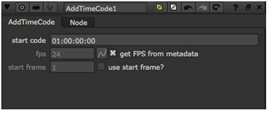

To add a time code to metadata:
| 1. | Select MetaData > AddTimeCode to insert an AddTimeCode node into your node tree. |
A time code is added to the metadata being passed through. By default, the time code is 01:00:00:00 on the first frame. It is updated throughout the frame range according to the input clip’s playback speed, which in turn is controlled by the fps (frames per second) parameter in the Project Settings. If you change the fps value in the Project Settings, the time code in the metadata is updated to reflect the change.

Nuke can also deal with drop frames, such as when a clip’s frame rate is 29.97 or 59.94. Instead of the default HH:MM:SS:FF time code format, use the format HH;MM;SS;FF, delimited by ; (semicolon).
NOTE: Using semicolon delimiters with non-drop frame time codes displays an error in the Viewer.
| 2. | If you don’t want the time code on the start frame to be 01:00:00:00, enter a new time code in the startcode field. |
| 3. | If you want to specify the playback speed manually rather than get it from the metadata and project settings, uncheck get FPS from metadata and enter a new value in the fps field. |
| 4. | If you want to specify a different start frame than the first frame, check use start frame? and enter a new value in the start frame field. |
If you want to display the time code on the image, insert a Text node after the AddTimeCode node and enter [timecode] in the message field. For more information on referencing metadata via expressions, see Accessing Metadata Using Tcl Expressions.
|
|